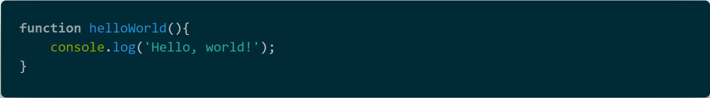
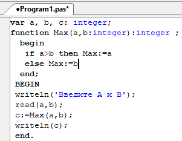

Презентация на тему: "Функции и процедуры"
## Что такое функции и процедуры? Во всех программах есть группы команд которые выполняются много раз. Таким группам присваивают имена, а для того чтобы выполнить их, указывают только их имена. Такие группы команд называются процедурами и функциями. 
## Что такое фунция? <ul> <li>Функция- группы команд, которые при своем выполнении производят какие- либо вычисления и соответственно возвращают какое- то значение</li> <li>Пример: вычисление синуса, модуль числа </li> </ul> <img src="img/code (1).png" alt="">
## Что такое процедура? <ul> <li>Процедурами называют какие- либо действия, которые выполняет программа </li> <li>Пример: очищает экран, считывает данные с клавиатуры. </li> </ul> <img src="img/code (2).png" alt="">
## Функции и процедуры двух видов: <ul> <li>Стандартные- входят в состав языка и вызывается для выполнения по своему имени</li> <li>Пользовательские- функции и процедуры спроектированные разработчиком программы.</li> </ul> <img src="img/code (3).png" alt="">
## Создание функции В javascript функции являются полноценными объектами встроенного класса Function. Именно поэтому их можно присваивать переменным, передавать и, конечно, у них есть свойства <img src="img/code (4).png" alt=""> <img src="img/code (5).png" alt="">
## Отличие функции от процедуры <ul> <li>Между функцией и процедурой имеется несколько различий. Наиболее существенное состоит в том, что функция всегда возвращает одно конкретное значение, тогда как процедура нет. Это различие отражается в особенности объявления процедур и функций.</li> </ul>
## Пример написания функции <ul> <li>Дана задача: написать функцию для нахождения наибольшего из двух чисел.</li> </ul> 
## Создание процедуры <img src="img/code (6).png" alt="">
## Пример написания процедуры <img src="img/code (7).png" alt="">